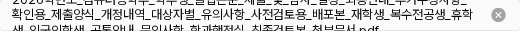

첨부 파일명과 삭제 상태
관련 판단 2개 · 제안은 앱 미적용먼저, 기반 규칙을 마무리했어
3단계 완료: 색·타이포·아이콘·배치·간격·형태의 기준과 유지 예외를 정리했다. 공개·예약은320px부터, 편집·관리는1200px부터 검증한다. 모든 화면의 상태를 검증했다는 뜻은 아니며 현재는4단계 적용 중이다.
DS-029·030 적용: 작은 예약창의 날짜 팝오버, 영어 항목명과 긴 값·버튼 배치를 적용했다. 날짜 선택과 한·영320px의 긴 내용·낮은 창도 확인했다. 실제 예약 적용.
공통 초점: 폼의 체크·라디오·드롭다운·날짜와 파일/이미지 선택·삭제에 연결했다. 파일은 Tab→Space로 선택창을 열고, 이름이 있는 삭제 버튼을 키보드로 누를 수 있다. 적용 현황과 남은 범위.
코드 값: 버튼·드롭다운의 같은 패딩값은 기존 간격 유틸리티에 연결했다. 실제값이 다른 .62rem 등을 임의로 반올림하지 않았다. 값과 코드의 연결.
1. 긴 첨부 파일명 · UP-Q1
문제: 첨부 행의 높이는30px 고정인데 긴 파일명은 여러 줄이 된다. 글자가 행 높이를 넘어 인접 행을 침범할 수 있다. 기존520px 폭은 데스크톱에서 유지한다.
A 추천 · 줄바꿈: 전체 이름을 표시하고 필요한 만큼 행 높이를 늘린다. 파일명이 길수록 목록은 길어지지만 비슷한 이름의 파일을 구별할 수 있다. 짧은 파일은 기존30px 높이를 유지한다.
B · 말줄임: 행 높이30px·한 줄을 유지하고 넘치는 이름은 …로 생략한다. 목록 밀도를 유지하지만 이름 뒷부분을 화면에서 바로 확인하기 어렵다.
현재 · 높이30px 고정

2. 파일 삭제 아이콘 · UP-Q2
문제: 현재 원형 X는 #a3a3a3이며 호버에도 같은 색이다. 클릭할 수 있는 상태와 포인터 반응을 색으로 구분하기 어렵다.
추천: 기존 원형 X를 유지하고 기본색을 #737373, 호버를 #404040으로 한다. 이미 정한 중립색과 다른 보조 아이콘의 기본→호버 패턴을 재사용한다. 위험색을 새로 도입하거나 버튼 모양·크기를 바꾸지 않는다.
현재 기본·호버
#a3a3a3 → 동일
추천 기본
#737373
추천 호버

#404040
이번에 함께 정할 두 가지
- 파일명: A 전체 이름 줄바꿈과 B 한 줄 말줄임 중 무엇이 좋을까? A를 추천해.
- 삭제 아이콘: 기본 #737373 / 호버 #404040을 적용할까?
예: “1 A, 2 적용”. 이 두 제안은 아직 앱 미적용이다. 근거·범위·한계.